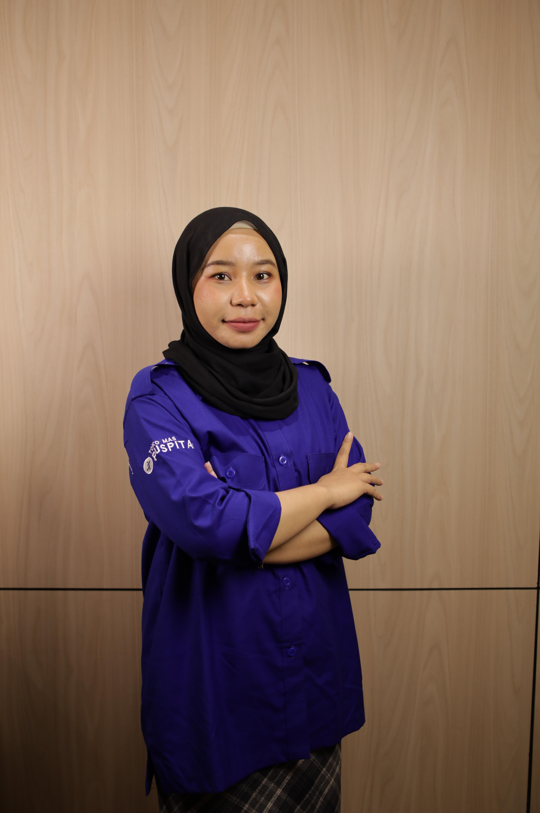

01
Financial Reporting
Financial statements, reconciliations, and structured reporting processes.
Personal Portfolio / 2026
Accounting & Finance Professional
Building structured financial systems, transforming data into meaningful insights, and supporting better business decisions through accounting and financial analysis.
EST. IN PROGRESS
01 — 06
01 / About Me

I am Indah Hamidah, an accounting and finance professional with an interest in financial reporting, budgeting, cost analysis, and business operations.
My work focuses on developing practical accounting processes, organizing financial information, and creating structured systems that help businesses understand their financial position.
I believe accounting is not only about recording transactions. It is also about creating clarity, accountability, and a foundation for sustainable growth.
02 / What I Do
A growing foundation across accounting, financial management, and business analysis.
Financial statements, reconciliations, and structured reporting processes.
Budget preparation, expense monitoring, and financial planning.
Cost structures, cost of goods sold, and profitability analysis.
Inventory tracking, stock control, and inventory reporting.
Financial performance monitoring and business insights.
Accounting procedures, documentation, and operational controls.
03 / Selected Work
A selection of accounting and financial management initiatives focused on building better business systems.
Developing structured accounting records and financial statement templates to support consistent reporting and financial transparency.
Creating budgeting frameworks and expense monitoring approaches to support more disciplined financial decisions.
Organizing production cost components and developing a clearer approach to cost allocation and profitability evaluation.
Developing inventory tracking concepts to improve stock movement visibility, recording, and reconciliation.
Organizing fixed asset records, useful lives, residual values, and depreciation schedules.
Reviewing expense categories and identifying opportunities for better cost efficiency and operational accountability.
04 / My Philosophy
Building organized processes and reliable financial records.
Paying attention to detail and maintaining consistency in every process.
Continuously learning, improving, and creating meaningful impact.
05 / Let's Connect
Open to meaningful conversations, professional connections, and opportunities to learn and grow.
SEND ME AN EMAIL